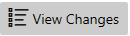
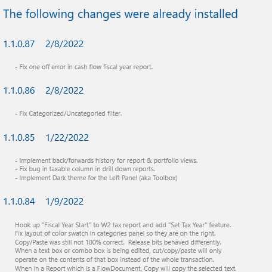
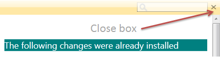
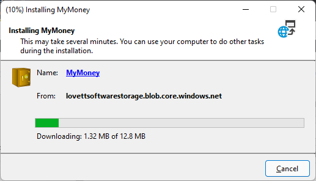
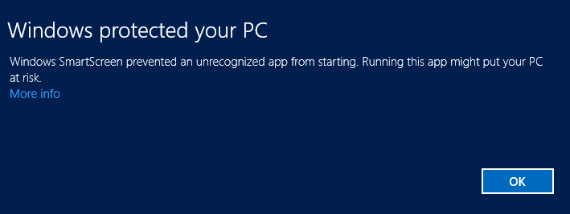
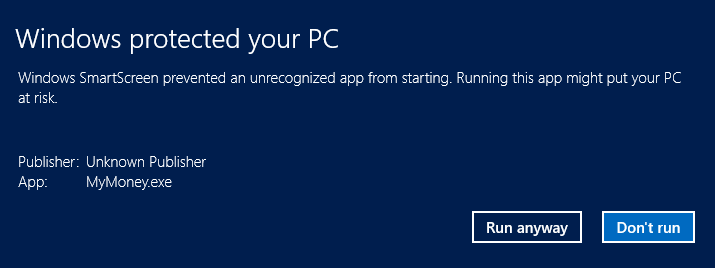

Updates#
The MyMoney application shows you information about the available updates that you can download. First it pings the web site and finds the latest info and if a newer version is available a new button appears on top right of the toolbar titled "View Changes" or "View Updates":

If you click the button it will show you the details of what is changed in the pending update so you can decide whether or not you want to get this version, like this:

You can close this page by clicking the close box in the top right hand corner that looks like this:

When you click Install the app will close and you will see this clickonce setup dialog:

Check that the "From:" field matches what you see here.
After installing an update Windows may stop the app from launching with this popup:

If this happens click the "More Info" link, which will expose another choice, namely "Run anyway":

Click "Run anyway". The "Publisher" saying "Unknown" is actually a bug in Windows. The ClickOnce setup would not have installed the update if the publisher was not set correctly in the digitally signed manifest.